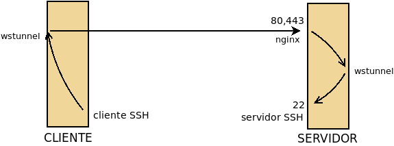

7.2.2.2.9. Puerto compartido¶
Por hacer
Este apartado debe ser más general y trasladarse a proxies inversos y hacer aquí una pequeña explicación y dar el enlace:
Incluir haproxy.
Referir stunnel en el apartado de SSL, tanto en el cliente como en el servidor.
Proxy transparente:
- stunnel transparente.
- haproxy transparente.
- nginx transparente.
Es probable que con la técnica usada para stunnel se puedan hacer haproxy y nginx transparentes aunque el servidor final esté en la misma máquina.
Los puertos 80 y 443 son puertos a los que comúnmente todas las redes, por muy restrictivas que sean, dejan salir ya que de lo contrario ni siquiera se permitiría la navegación en ellas. Por esto motivo, puede darse el caso de que, para asegurarnos el acceso, tengamos interés es que nuestro servicio SSH o VPN escuche en ellos. Cuando esto es así caben dos posibilidades en el lado del servidor:
- Que no tengamos servidor web y, por tanto, los puertos estén libres.
- Que sí tengamos servidor web y, consecuentemente, no podamos ocupar los puertos con ningún otro servicio.
Por su parte, en el lado del cliente hay dos posibilidades también para la red restringida:
- Que no haya vigilancia sobre esos puertos y, por tanto, pueda enviarse tráfico no web.
- Que los puertos sí esten vigilados por un proxy y, en consecuencia, el tráfico deba ser forzosamente web. A este respecto es más común la vigilancia del puerto 80 que la del puerto 443.
Un cuadro resumen con las alternativas posibles es el siguiente:
| Puerto | Vigilancia | Solución |
|---|---|---|
| Libre | No | Poner a escuchar directamente el servicio. |
| Ocupado | No | Usar un multiplexor como sslh. |
| Libre | Sí | Enmascarar el tráfico. |
| Ocupado | Sí | Enmascarar el tráfico y discriminar tráfico a continuación. |
Por supuesto, que el puerto esté ocupado depende de nuestro servidor, pero que la red remota esté sometida a vigilancia depende de cuál sea la red desde la que se conecta el cliente: en ocasiones no habrá restricción alguna y en otra la rstricción y vigilancia puede ser máxima. Hay, además, otra circunstancia a tener en cuenta y es el coste para la conexión de la solución. Es obvio que escuchar directamente es la solución más ventajosa desde el punto de vista del rendimiento, mientras que tener que enmascarar el tráfico y, además, deber discriminar tráfico por compartir el puerto la más costosa.
Las posibles soluciones para puerto compartido, ajustadas a la necesidad, son:
- Multiplexar los tráficos, esto es, colocar en el puerto 443 un servicio que identifique de qué tipo es cada tráfico y lo redirija al servicio final adecuado. Como cada tráfico circula sin modificaciones, la solución es inútil si un proxy comprueba si el tráfico de salida hacia el puerto 443 es tráfico SSL.
- Enmascarar el tráfico haciéndolo pasar como una aplicación que usa Websocket.. Como Websocket forma parte del estándar HTML5, la comunicación debería ser aceptada incluso en presencia de un proxy. Aún con ello, si se usa una comunicación sin cifrar, en teoría, se podría analizar cuál es el tráfico de la aplicación que usa websocket y rechazarlo.
- Enmascarar el tráfico cifrándolo con SSL y enviándolo al puerto 443. Esto lo haría indistiguible del tráfico HTTPs por cualquier proxy y, en consecuencia, irrestringible. La contrapartida es que se añade un cifrado sonre un protocolo ya cifrado (SSH o VPN) lo que disminuye enormemente el rendimiento. Es obvio que la solución de tunelizar con Websocket también puede llevarse a cabo sobre HTTPs, pero no añade más que un poco de pérdida de rendimiento. Ahora bien, si se implementó la solución de Websocket para HTTP, puede ser interesante, ya que la configuración adicional sería mínima.
7.2.2.2.9.1. Websocket¶
Para la segunda estrategia necesitamos un programa, como el proxy wstunnel, que permita al servicio que deseamos utilizar (SSH, VPN o cualquier otro) el paso por el Websocket. Este programa actuará tanto en la parte cliente como en la servidor, de manera que el cliente (pongamos que SSH) conecta con él y no con el servidor. él conecta con su correspondiente parte servidor y, finalmente, esta parte servidor le entrega el tráfico al servidor SSH:

En el gráfico situamos en la parte delantera del cliente y el servidor los servicios expuestos (porque escuchan en la interfaz física) y en la trasera los no expuestos (porque escuchan en la interfaz de loopback). Obsérvese que como el servidor SSH sigue expuesto, en las redes remotas en que no hay restricciones seguirá pudiéndose acceder a él directamente.
Ahora bien, si requerimos compartir el puerto del servidor con un servicio web normal, entonces deberemos colocar un proxy inverso que redirija el tráfico hacia el backend apropiado:
En este caso, nuestro proxy es el propio nginx, por lo que las peticiones web podrá gestionarlas él mismo.
7.2.2.2.9.1.1. wstunnel¶
No tiene paquete en Debian, así que debemos instalarlo a mano. El propio
respositorio de Github facilita una versión compilada para 64bits, así que la
instalación puede limitarse a descargar el fichero precompilado y colocarlo en
algún lugar adecuado en el PATH (típicamente /usr/local/bin). Su uso es
bastante sencillo: debemos instalarlo tanto en la máquina servidor como en la
máquina cliente (véanse lo esquemas superiores).
- Servidor
En la máquina servidor, que es lo que realmente nos interesa a efectos de este epígrafe, debe escuchar según nos interese. Por ejemplo, así:
# wstunnel -v --server ws://0.0.0.0lo cual supone que la aplicación escuche sin cifrado en el puerto 80 (ws) de todas las interfaces los datos tunelizados. Podríamos modificar la escucha cambiando el protocolo por wss que cifrará y escuchará por el 443. Si nos interesara, podríamos alterar los puertos prefijados también (p.e. ws://0.0.0.0:8080). A qué aplicación se redirijan los datos dependerá de lo que se especifique en el cliente. La línea anterior supone exponer wstunnel (tal como representa la primera figura) y como no se ha establecido ninguna restricción sobre el destino del tráfico, esto podría propiciar que cualquier máquina utilizara ilegítimamente nuestro túnel. Así pues, cuando se expone el túnel lo más prudente es restringir el destino:
# wstunnel -v --server ws://0.0.0.0 -r 127.0.0.1:22
que sólo aceptará tráfico de clientes que indiquen que el tráfico debe mandarse al servicio SSH local a la parte servidor, o sea, a un servidor SSH que está conectado en la misma máquina.
Para resolver la situación en la que queremos compartir el puerto y exponemos el proxy (o sea, nginx) y no wstunnel basta con que hagamos que éste último escuche en algún puerto libre de una interfaz de loopback:
# wstunnel -v --server ws://127.0.0.1:8080en que podemos hacer exactamente la misma puntualización a la restricción sobre el destino.
- Cliente
En la máquina cliente establecemos el otro extremo del túnel de este modo:
# wstunnel -v -L 12345:127.0.0.1:22 ws://203.0.113.1
donde hemos supuesto que la máquina servidor tiene la IP 203.0.113.1. En este extremo del túnel indicamos a wstunnel que el tráfico que escuche por el puerto 12345 de la interfaz de loopback debe ser dirigido en el servidor al puerto 22 de la interfaz de loopback (del servidor claro está). Esto supone que si queremos usar el túnel, el cliente SSH deberá conectar al puerto 12345* de *lo*. Ha de hacerse notar que el que no se cifra y conectamos al puerto **80, es coherente con el modo en que arrancamos wstunnel en el servidor.
Es importante señalar también que al no haber especificado en el cliente, el puerto 12345 en el cliente y el puerto 22 en el servidor son UDP. Sin embargo, wstunnel tiene capacidad para tunelizar protocolos UDP con tan solo indicarlo al arrancar el cliente (en el lado del servidor todo sigue igual):
# wstunnel -v --udp --udpTimeoutSec -1 -L 12345:127.0.0.1:1194 ws://203.0.113.1
En este caso el cliente escucha en el puerto 12345/UDP y en el servidor los datos acaban dirigidos al puerto 1194/UDP.
Por último, cuando en el servidor colocamos un proxy que recibe distinto tráfico y debe identificar cuál es el dirigido al websocket podremos usar un nombre específico de máquina:
# wstunnel -v -L 12345:127.0.0.1:22 ws://ssh.example.net
o incluso una ruta:
# wstunnel -v -L 12345:127.0.0.1:22 ws://www.example.net/ssh
- Ejemplo de uso
Para ilustrar el uso de wstunnel, podemos hacer lo siguiente en el servidor:
# wstunnel -v --server ws://0.0.0.0 -r 127.0.0.1:11111
y poner a escuchar el simple netcat:
# netcat -l -p 11111
En el cliente, establecemos el otro extremo del túnel así:
# wstunnel -v -L 22222:127.0.0.1:11111 ws://203.0.113.1
y utilizamos netcat para conversar con el del servidor:
# netcat localhost 22222
Nota
En este caso concreto en el cliente podemos simplificar ejecutando:
# wstunnel -v -L stdio:127.0.0.1:11111 ws://203.0.113.1que hace que el wstunnel del cliente no converse con el puerto 22222, sino con la entrada y salida estándar, por lo que pondemos ahorranos la ejecución de netcat en el cliente.
7.2.2.2.9.1.2. nginx¶
Cuando queremos compartir el puerto (80 o 443) entre distintas aplicaciones, incluido el propio servidor web es necesario trasladar wstunnel a la interfaz de loopback:
# wstunnel -v --server ws://127.0.0.1:8080
y poner en la interfaz física a nginx con una configuración en la que
podemos definir el fichero snippets/websocket.conf:
proxy_http_version 1.1;
proxy_set_header Upgrade $http_upgrade;
proxy_set_header Connection $connection_upgrade;
proxy_set_header X-Forwarded-Host $host;
proxy_set_header X-Forwarded-Proto $x_forwarded_proto;
proxy_set_header X-Forwarded-For $proxy_add_x_forwarded_for;
proxy_set_header Host $http_host;
y una configuración de sitio:
map $http_upgrade $connection_upgrade {
default upgrade;
'' close;
}
map $https $x_forwarded_proto {
default http;
on https;
}
server {
listen 80;
listen 443 ssl;
server_name ws.example.net;
include snippets/snakeoil.conf;
location / {
proxy_pass http://127.0.0.1:8080;
include snippets/websocket.conf;
}
}
En la configuración aceptamos tanto conexiones cifradas (para lo cual en el cliente deberíamos usar el protocolo wss) como conexiones sin cifrar. En ambos casos, la parte servidor de wstunnel escucharía usando el protocolo ws, ya que el extremo del cifrado es el proxy.
En la configuración propuesta se identifica el tráfico del túnel por ir dirigido al nombre ws.example.net y, como no hemos restringido el destino, podremos con el mismo túnel dar servicio a varios servidores (SSH, VPN. etc.).
Por hacer
Comprobar si con el cortafuegos podemos restringir los destinos posibles y mirar una forma de hacer wstunnel un servicio de systemd.
Nota
Si la conexión se hubiera identificado con una ruta, no habría más que haber cambiado la localización:
location ^~ /wireguard/ {
proxy_pass http://127.0.0.1:8080;
include snippets/websocket.conf;
}
7.2.2.2.9.2. SSL¶
La última técnica es cifrar el tráfico con SSL en el cliente y enviarlo al puerto 443 del servidor. Esto hace este tráfico indistinguible de HTTPs y, en consecuencia, burlará cualquier restricción.